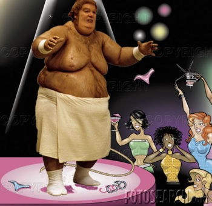

Gigoló
 De: La Frikipedia, la enciclopedia extremadamente seria.
De: La Frikipedia, la enciclopedia extremadamente seria.

|
La información contenida en este artículo es una mínima parte de su jugo total, así que ponte los guantes, saca el tupperwere y empieza a exprimir el tema. Si lo haces serás recompensado con una galleta en almíbar y algo más.
|
Que diablos es
Criatura humana cuyo único fin es el de satisfacer sexualmente a cualquier criatura viva; sea esta, ogro, elfo, no muerto, nemesis, perro, gato, caracol, j.gayber, bisexual, homosexual, mujeres, hombres o cualquiera que este dispuesto a pagar con dinero en efectivo, o regalandole una casa en la playa con todos los gastos pagadaos durante el mes que éste le satisfaga líbidamente.
Los gigolós son individuos responsables que trabajan bilateralmente con las prostitutas y algunos políticos. Desarrollando nuevas ofertas de marketing, ofreciéndo al público las mejores ofertas de 2x1, Happy Hour y promociones permanentes.
 Gigolo comun, mostrando sus encantos.
Clasificación
Los gigolos pertenecen a un amplio grupo de personas en la sociedad. Los hay en distintos colores y sabores, entre ellos los,canis, emos, pijos (gomelos), "reggaetonteros" o como diablos se escriba, raperos, punk, hardcoreros, frikis y toda clase de imbéciles que puedan satisfacer las ansias sexuales de estas criaturas perversamente pervertidas e inversamente heterosexuales.
- Los gigolós pijos "gomelos": Son aquellos gigolos a los que se les ha acabado el dinero de papi y mami, y tienen que prostituirse con las amigas de mami para poderse ganar la vida y para satisfacer sus sueños eróticos de infancia con las amigas de mami, que en algunas ocasiones pueden llegar a superar los 75 años de edad. Estos gigolos se encuentran en los barrios y restaurantes más refinados de la ciudad, se les distingue de los demás en que usan ropa refinada, de marca, de última moda, con perfumes caros. Estos, a diferencia de los pijos "gomelos"
normales no gigolós, se distinguen en que el aroma de su perfume se aproxima más al de las ancianas con las que se acuestan, que a los perfumes que usan los adolescentes pijos "gomelos" normales no gigolós.
- Los gigolós Punk: Son aquellos gigolós que chicanean como pollos o aves en celo. ¡Ya decia que esa cresta les debía servir para algo...!
- Los gigolós frikis: Por suerte no existen, porque si un friki fuera gigoló dejaría de ser friki.
- Los gigolós emos: El comportamiento sexual de estos gigolós, es particularmente diferente al resto de los gigolós, ya que estos juegan al sadomasoquismo extremo y a cortarse las partes con cuchillas de afeitar. La manera de seducir de estos
gilipollas gigolós se reduce a utilizar el maquillaje de la hermananita para lograrlo. Cuanto más maquillaje tenga el individuo, mejor, ya que así lograrán imitar a una mujer al 100% "solo ante los ojos de un ebrio", y asi conseguir tirar con otro hombre. El nombre clave de estos gigolos es chica McDonalds, porque traen una sorpresita. Se les encuentra en los barrios mas emos de la ciudad.
- Los gigolós "reguetonteros" o como diablos que se escriba: se les encuentra en los inframundos y en las discotecas light y de cualquier clase. Estos gigolós con alias de perros tiran con sus pseudónimos o alias de zorras, perras, gatas, felinas o cualquier clase de nombre pervertido que se inventen en un futuro. Cuando estos
imbéciles regetonteros entran en trance con su musica diabólica abominada por chuck norris, tiran directamente en las discotecas de una manera misteriosa y restregada con las denominadas zorras, gatas, etc... La forma de seducir de estos sujetos radica en hacer movimientos exagerados, restregarse contra su victima la cliente o cliente, y hablar como Gamín.
- Los gigolós raperos: Son una clase de
imbéciles seres similares a los regetonteros, sólo que estos se diferencian en que en lugar de escuchar música diabólica, la componen ellos mismos. La manera de seducir de estos individuos también se diferencia de la de los regetonteros, ya que estos imbéciles seres, cuantas más joyas tengan, más atractivos son para sus rameras clientes.
- Los gigolós canis: son una combinación entre gigolós regetonteros y gigolós pijos "gomelos".
- Los gigolós hardcoreros: son una combinación entre gigolós emos y gigolós punk.
Características
Los gigolós son el frustrado resultado de ser estrella porno, terminando como un trabajador gigoló.
Gigolós Famosos
Autor(es):
- Krusher
- Aque
- El Sevillano
- Pandorosa
- ANorMaliTa
- Lunasfingo
- Palicron
- Chan
- Nocqponer123
- Sealand18
Frikipedia 2005-2016, Licencia
GFDL 1.2 - Extraído por FrikiLeaks